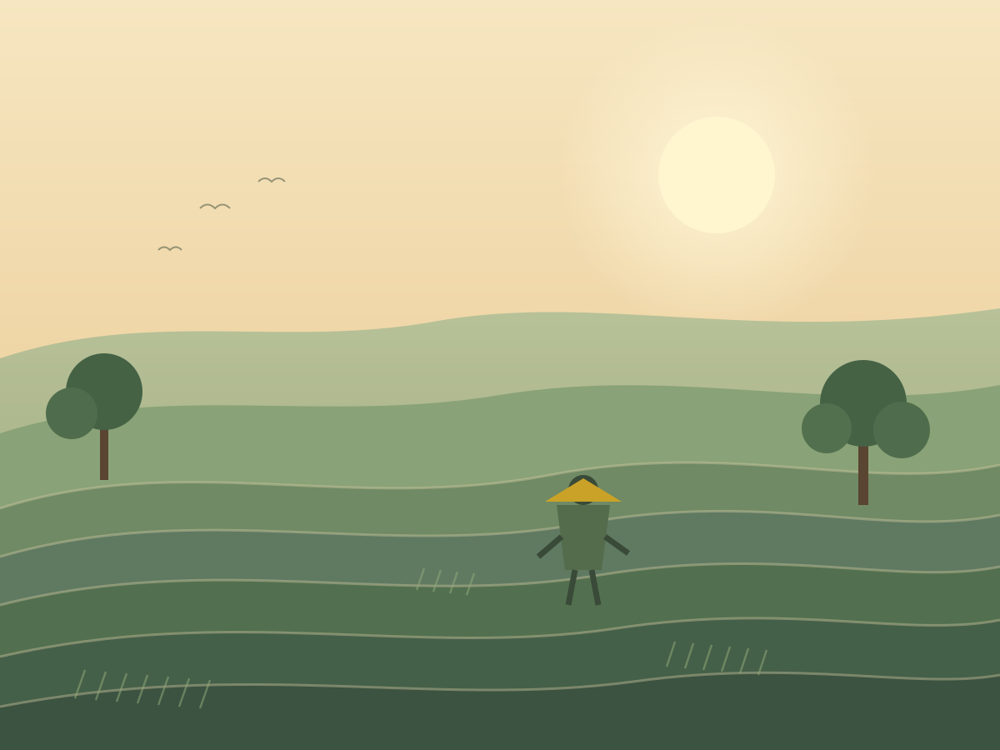
Unggulan
Pertanian Organik
Beras, sayur, dan palawija ditanam dengan pupuk alami di tanah vulkanik yang subur.
Jelajahi hasil taniDesa Sumber Asri · Gunungkidul
Di antara terasering hijau dan kabut pagi, Desa Sumber Asri merawat alam, budaya, dan usaha warga agar tumbuh berkelanjutan.
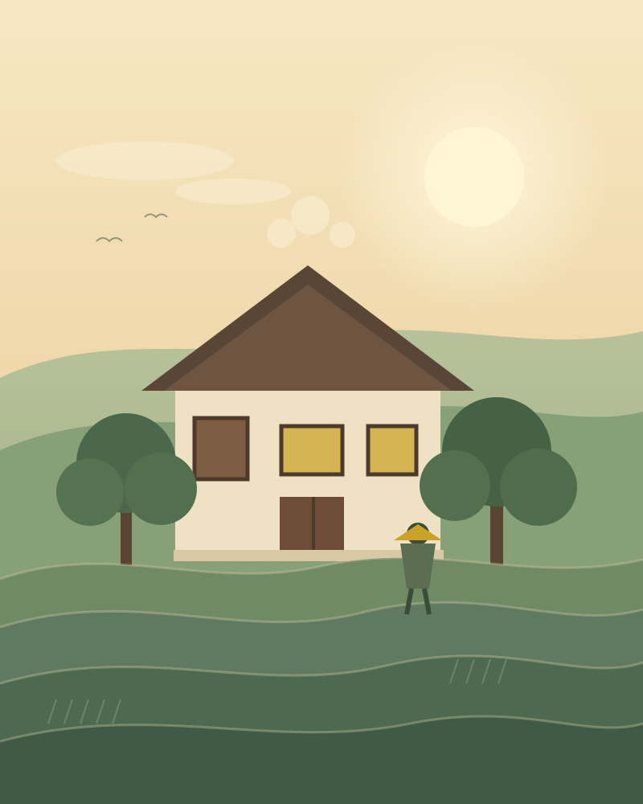
Tentang Desa
Terletak di kaki perbukitan Gunungkidul, Sumber Asri dikenal dengan hamparan sawah terasering, udara pagi yang sejuk, dan warga yang menjunjung tinggi gotong royong. Alam bukan sekadar latar, melainkan bagian dari cara kami hidup.
Melalui pertanian organik, wisata berbasis masyarakat, dan UMKM kreatif, kami membangun ekonomi desa tanpa meninggalkan nilai budaya dan kelestarian lingkungan.
Potensi & Keunggulan
Empat pilar utama yang menjadi napas ekonomi dan identitas Desa Sumber Asri — dari sawah hingga karya warga.

Beras, sayur, dan palawija ditanam dengan pupuk alami di tanah vulkanik yang subur.
Jelajahi hasil tani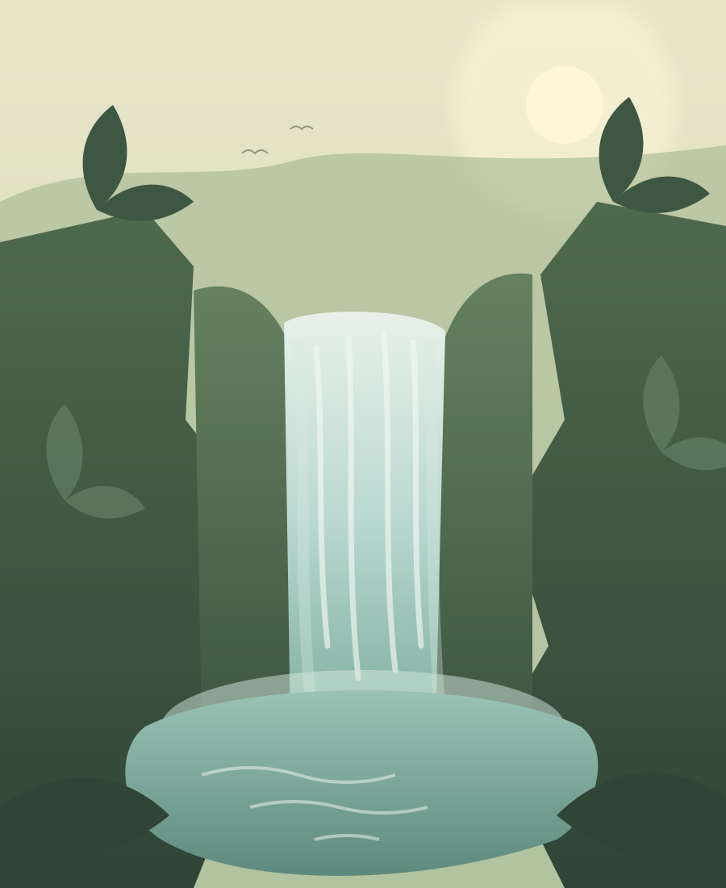
Sudut alam yang masih asri untuk trekking, camping, dan menikmati pagi.
Lihat destinasi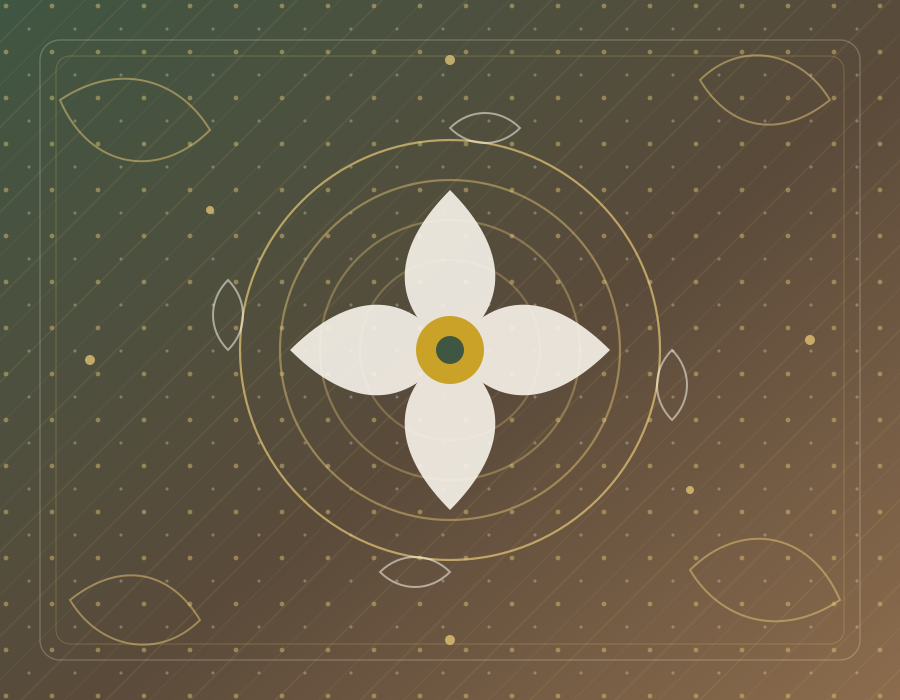
Karawitan, kirab budaya, dan batik tulis yang diwariskan antargenerasi.
Kenali budaya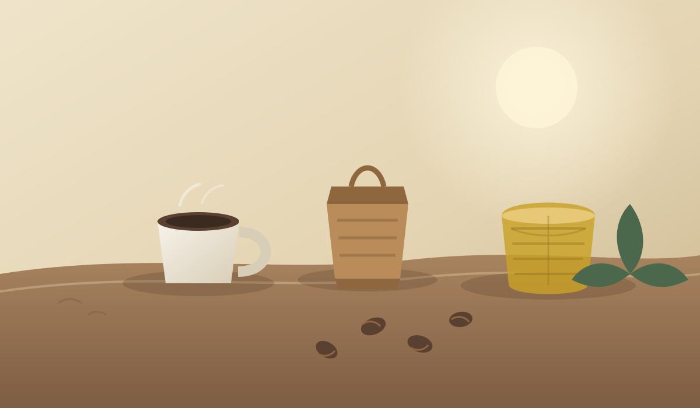
Kopi robusta, gula aren, anyaman bambu, dan batik karya warga.
Lihat produkDestinasi Wisata
Tiga destinasi yang dikelola bersama warga. Setiap kunjungan Anda turut menjaga alam dan menghidupkan usaha lokal.
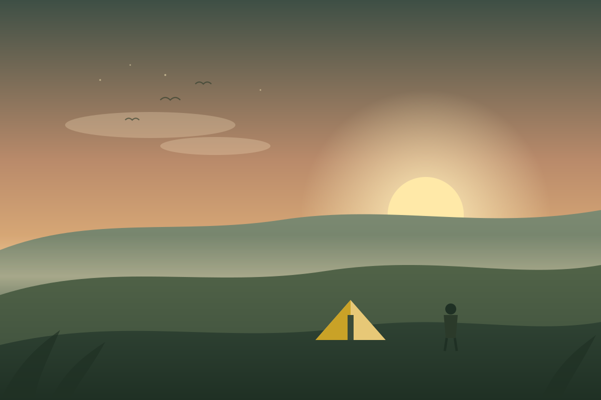
SunrisePanorama terasering dan kabut lembah terbaik dinikmati sebelum matahari terbit.
Lihat di peta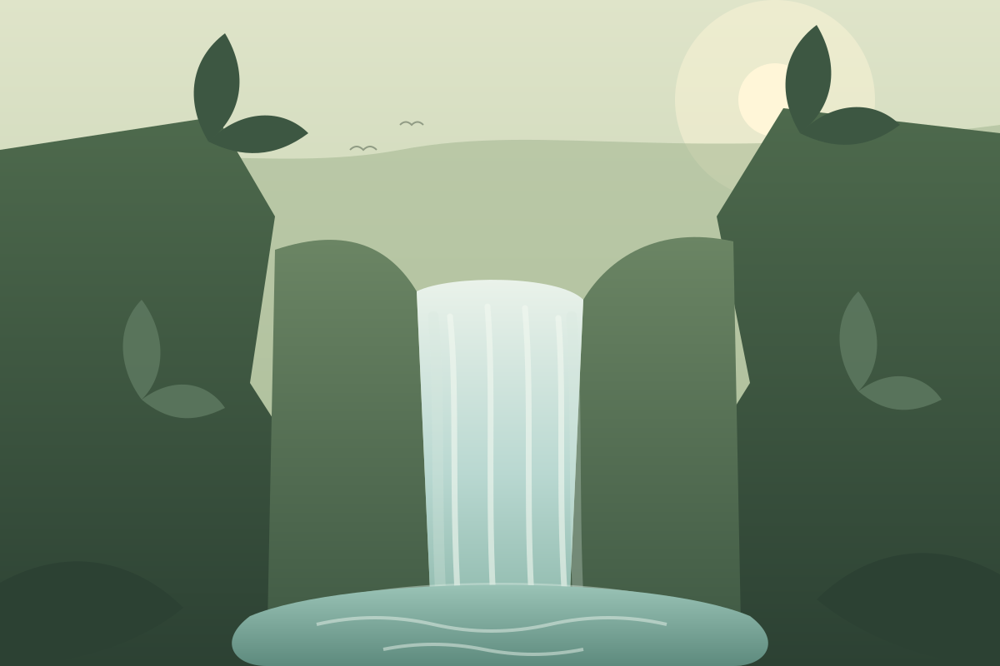
Air terjunAir jernih sepanjang tahun, cocok untuk berendam dan menikmati hutan kecil.
Lihat di peta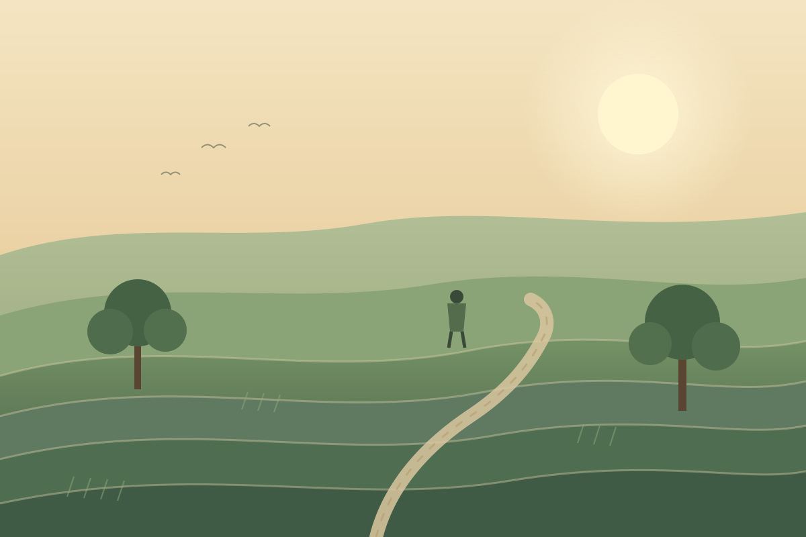
TeraseringJalur ringan melintasi sawah bertingkat, ditemani suara air dan angin.
Lihat di petaProduk UMKM
Dibuat dengan bahan lokal dan keterampilan turun-temurun. Pesan langsung dari produsen melalui WhatsApp.
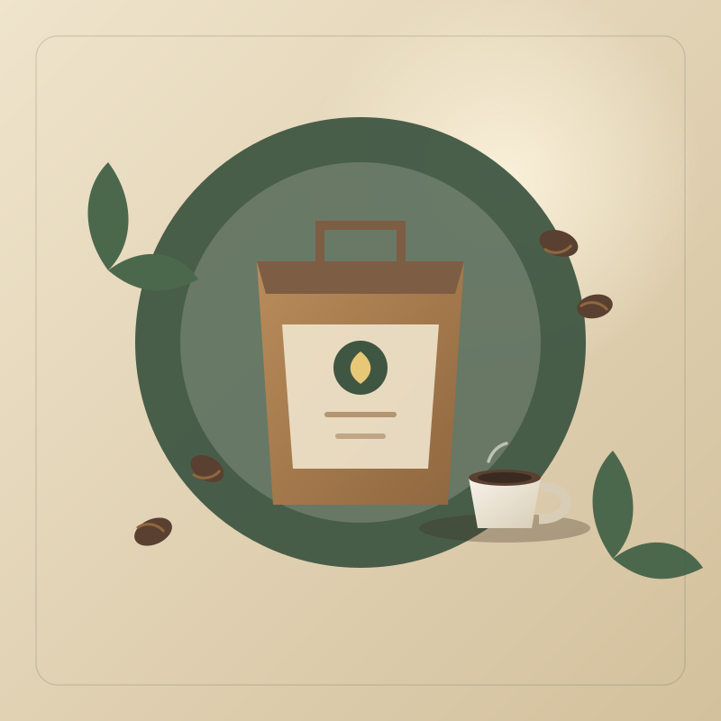
KulinerBiji kopi sangrai medium dari kebun warga, aroma cokelat dan rempah.
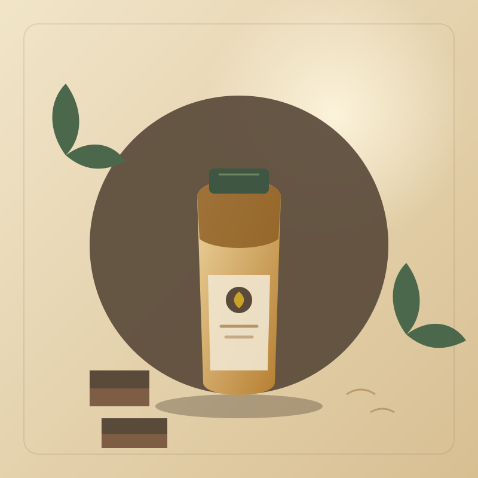
Kuliner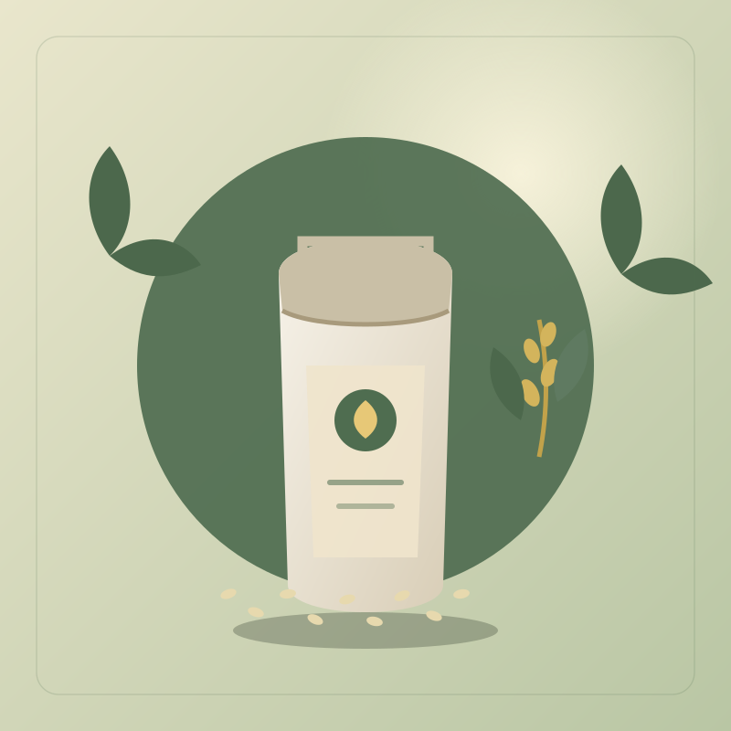
Pertanian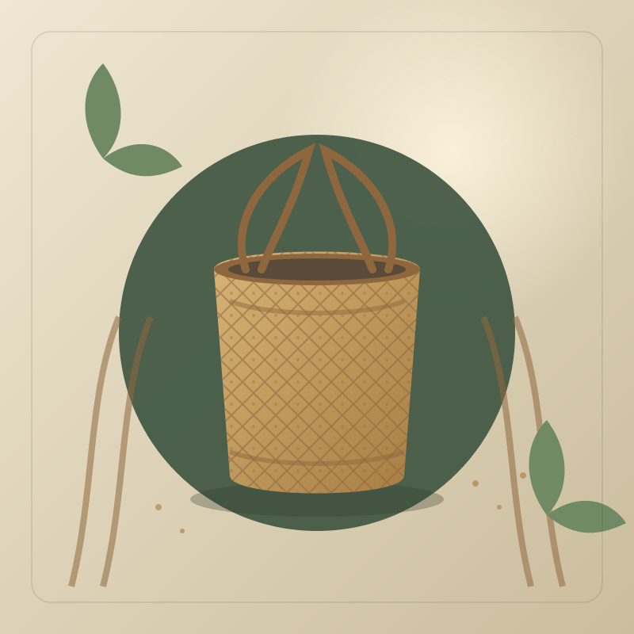
Kriya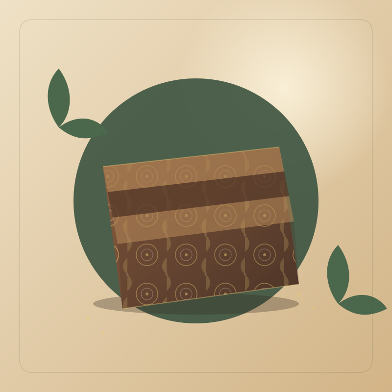
Kriya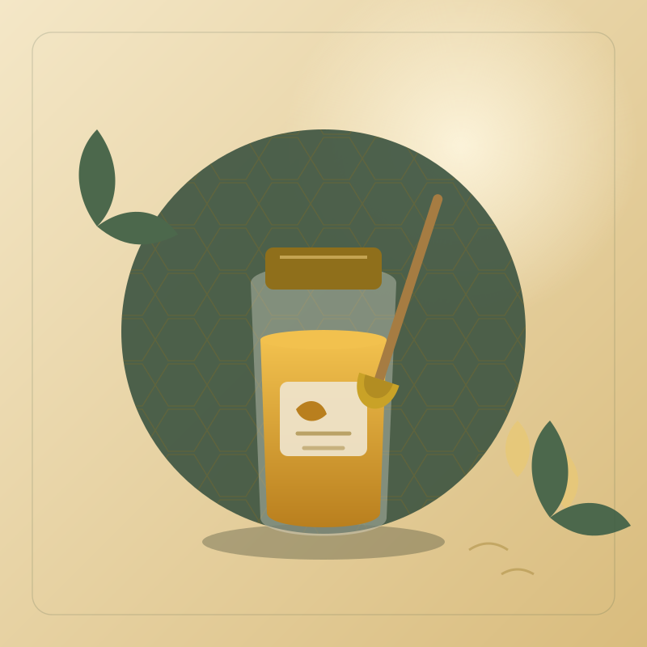
PertanianKontak & Lokasi
Kami terbuka untuk kunjungan wisata, kolaborasi, pembelian produk, maupun program pemberdayaan desa.